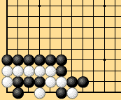
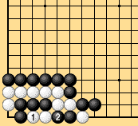
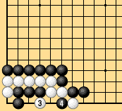

|
| The position known as eternal life also enters an endless cycle, shown in Dias. 2-16-1 to 2-16-3. |
|  |  |
| Dia. 2-16-1 | Dia. 2-16-2 |
|---|---|
|  | |
| Dia. 2-16-3 |
|
When one of these endless cyclic positions appears, if neither player gives in, the game is annulled. It is certainly not illogical or contradictory for the rules to annul games in which these interesting positions occur, but it would be helpful if there were some way (rule) to stop the endless cycle. It would be desirable to generalize the ko rule slightly to avoid annulled games. Exactly the same problem (of generalizing the ko rule) occurs in area rules. Recall that the question of reinforcing at the end of the game, which we met earlier, is related to the ko rule. Endless positions like these necessarily have a repeating cycle. They can be resolved by requiring a ko threat to be played once per cycle. A very clear way to state this is to say that every stone played must make a new configuration that has not appeared in the same game before. That takes care of both ordinary ko and these endless cycling problems very elegantly. It also pins down the point at which a repeating cycle begins. I would like to elevate this super-ko rule into one of most fundamental rules of go. A good description was suggested some time ago by Aoki Muneo: it "prohibits recreating the same position." A certain rules theorist has proposed a rule that would permit repeating cycles that do not become endless. This is exactly the sort of language that we must keep out of the rules. It is nonsense to talk about a repeating cycle that does not become endless. |